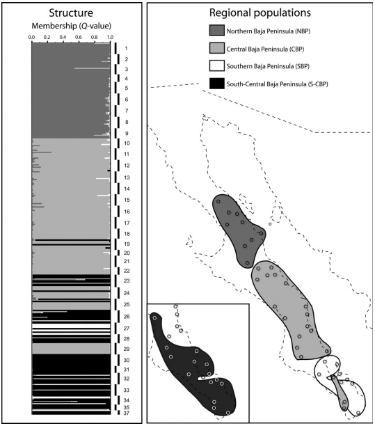

Abstract
Ecologically interacting species may have phylogeographical histories that are shaped both by features of their abiotic landscape and by biotic constraints imposed by their coassociation. The Baja California peninsula provides an excellent opportunity to examine the influence of abiotic vs. biotic factors on patterns of diversity in plant-insect species. This is because past climatic and geological changes impacted the genetic structure of plants quite differently to that of codistributed free-living animals (e.g. herpetofauna and small mammals). Thus, plant-like’ patterns should be discernible in host-specific insect herbivores. Here, we investigate the population history of a monophagous bark beetle, Araptus attenuatus, and consider drivers of phylogeographical patterns in the light of previous work on its host plant, Euphorbia lomelii. Using a combination of phylogenetic, coalescent-simulation-based and exploratory analyses of mitochondrial DNA sequences and nuclear genotypic data, we found that the evolutionary history of A.attenuatus exhibits similarities to its host plant that are attributable to both biotic and abiotic processes. Southward range expansion and recent colonization of continental Sonora from the Baja peninsula appear to be unique to this taxon pair and probably reflect influences of the host plant. On the other hand, abiotic factors with landscape-level influences on a diverse suite of codistributed arid-adapted taxa, such as Plio- and Pleistocene-aged marine incursions in the region, also left genetic signatures in beetle and host plant populations. Superimposed on these similarities, bark beetle-specific patterns and processes were also evident: our data revealed two secondarily sympatric, reproductively isolated genetic lineages, as well as a previously unrecognized mid-peninsular warm desert refuge. Taken together, this work illustrates that the evolutionary history of species-specific insect herbivores may represent a mosaic of influences, includingbut not limited tothose imposed by the host plant.